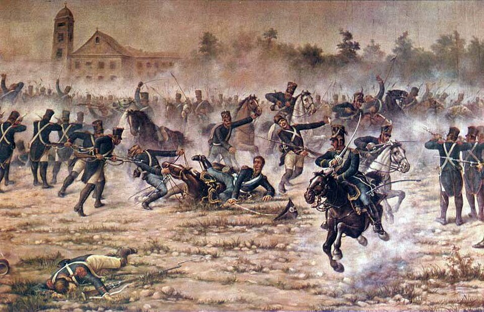

San Martín bate a los realistas en San Lorenzo
El coronel recién llegado de Europa emboscó junto al convento de San Carlos a una fuerza desembarcada de la escuadrilla española. La carga duró minutos. Un granadero correntino, Juan Bautista Cabral, dio su vida por salvar la de su jefe.

Los buques realistas que remontan el Paraná saqueando las poblaciones ribereñas encontraron esta mañana algo distinto a un caserío indefenso. Ocultos desde la noche detrás del convento de San Carlos, los Granaderos a Caballo del coronel José de San Martín aguardaron a que los cerca de doscientos cincuenta hombres de la escuadrilla desembarcaran y formaran en la barranca. A las cinco y media, dos columnas de jinetes salieron a la carga por los flancos, sable en mano, sin darles tiempo a un segundo cañonazo.
El combate fue breve y feroz. En el primer choque rodó muerto el caballo del coronel, que quedó con una pierna aprisionada bajo el animal y a merced de las bayonetas enemigas. Dos granaderos acudieron a su socorro: el puntano Juan Bautista Baigorria y el correntino Juan Bautista Cabral, que apartó al enemigo y liberó a su jefe recibiendo en el empeño dos heridas mortales. Aseguran quienes lo oyeron que murió diciendo que moría contento por haber batido a los enemigos.
Conviene presentar a los vencedores, porque el país apenas los conoce. El coronel San Martín desembarcó en Buenos Aires hace apenas un año, venido de pelear más de veinte en los ejércitos de España contra el moro y contra el francés, y el gobierno le encargó levantar un cuerpo de caballería a la europea. Lo formó en el cuartel del Retiro con paciencia de relojero: reclutas de las provincias, oficiales examinados en tribunal de honor, sable corvo y una consigna que ya es lema del cuerpo: el granadero no discute órdenes ni abandona heridos. Los buques realistas que salen de Montevideo, entre tanto, llevaban meses saqueando las costas del Paraná sin que nadie los escarmentara. Eso vino a terminarse hoy.
La emboscada se preparó con nocturnidad y teatro: los granaderos entraron al convento de San Carlos a medianoche, con los cascos de los caballos envueltos en trapos, y los frailes escondieron a la tropa mientras el coronel subía a la torre a contar enemigos con su catalejo. A las cinco y media, cuando los de la escuadrilla formaron en lo alto de la barranca con sus dos cañones, las puertas del convento se abrieron de par en par y las dos columnas cayeron sobre los flancos antes de que la infantería completara la segunda descarga. El parte del coronel al gobierno tiene el laconismo de los que serán famosos: nada dice de su caballo muerto y mucho del granadero Cabral.
Los realistas huyeron a sus lanchas dejando armas, banderas y decenas de bajas. La acción, pequeña en números, no lo es en consecuencias: es el bautismo de fuego de un cuerpo formado durante meses con disciplina europea y paciencia de maestro, y la primera victoria de este coronel San Martín, de quien sus oficiales dicen que no concibe el azar en la guerra. Habrá que seguirle el rastro: hombres que preparan tanto una escaramuza suelen estar pensando en algo mucho más grande.